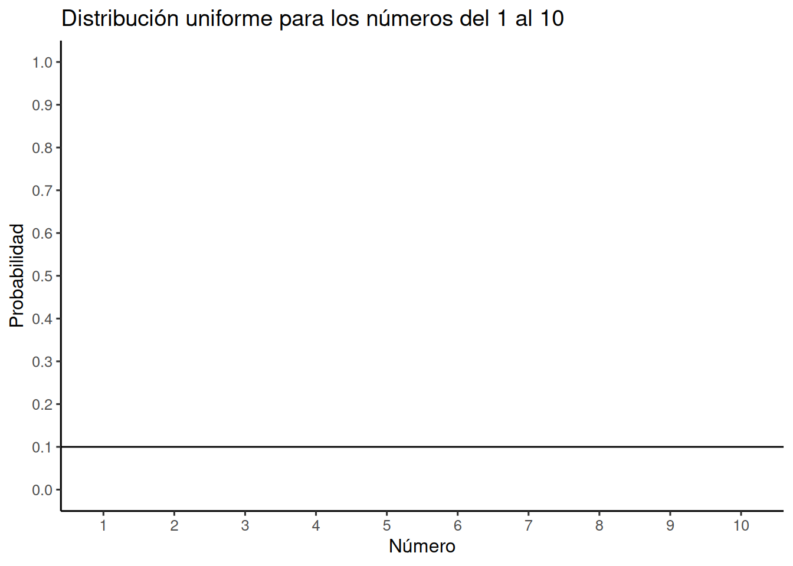
6 Fundamentos de la inferencia
Notas
Traducido al español rioplatense por ChatGPT4-o bajo la supervisión de Álvaro Cabana.
Los datos y los conjuntos de datos no son objetivos; son creaciones del diseño humano. Les damos voz a los números, inferimos a partir de ellos, y definimos su significado a través de nuestras interpretaciones. — Katie Crawford
Hasta ahora hemos estado hablando sobre cómo describir datos y buscar posibles relaciones entre las cosas que medimos. Comenzamos con el problema de tener demasiados números y discutimos cómo podían resumirse con estadísticas descriptivas y comunicarse a través de gráficos. También analizamos la idea de relaciones entre cosas. Si una cosa causa un cambio en otra, entonces, si medimos cómo una varía, deberíamos ver que la otra también varía, o que cambia de forma sistemática como consecuencia de la primera. Al final del capítulo sobre correlación, mostramos cómo las correlaciones —que implican una relación entre dos cosas— son muy difíciles de interpretar. ¿Por qué? Porque una correlación observada puede ser causada por una tercera variable oculta, o puede ser un hallazgo espurio “causado” por el azar.
Ahora comenzamos nuestro recorrido por la estadística inferencial. Estas son herramientas que se utilizan para hacer inferencias sobre de dónde provienen nuestros datos, y para hacer inferencias sobre qué causa qué.
En este capítulo vamos a presentar algunas ideas fundamentales. Nos mantendremos mayormente en un nivel conceptual, y usaremos muchas simulaciones, como hicimos en los capítulos anteriores. En los capítulos siguientes formalizaremos las intuiciones desarrolladas acá para explicar cómo funcionan algunas estadísticas inferenciales comunes.
6.1 Breve repaso de los experimentos
En el capítulo uno hablamos sobre métodos de investigación y experimentos. Los experimentos son una manera estructurada de recolectar datos que puede permitir inferencias sobre causalidad. Si quisiéramos saber si algo como ver videos de gatos en YouTube aumenta la felicidad, necesitaríamos un experimento. Ya vimos que simplemente buscar un montón de personas, medir cuántas horas ven videos de gatos y su nivel de felicidad, y correlacionar ambas cosas no permite inferencias causales. Por ejemplo, el flujo causal podría estar invertido: tal vez ser feliz causa que la gente quiera mirar más videos de gatos. Necesitamos un experimento.
Un experimento tiene dos partes: una manipulación y una medición. La manipulación está bajo el control de quien realiza el experimento. Las manipulaciones también se llaman variables independientes. Por ejemplo, podríamos manipular el tiempo dedicado a mirar videos de gatos: 1 hora versus 2 horas. La medición es el dato que se recolecta. Podríamos medir cuán feliz se siente una persona después de ver videos de gatos, usando una escala del 1 al 100. Las mediciones también se llaman variables dependientes. Entonces, en un experimento básico como el que estamos considerando, recogemos medidas de felicidad de personas asignadas a una de dos condiciones experimentales definidas por la variable independiente. Supongamos que realizamos el experimento con 50 participantes. A 25 personas se las asigna al azar para ver 1 hora de videos de gatos, y a las otras 25 se las asigna al azar para ver 2 horas. Luego, medimos cuán felices se sienten al final del experimento.
¿Qué deberíamos mirar en los datos? Si mirar videos de gatos causara un cambio en la felicidad, entonces esperaríamos que las medidas de felicidad de las personas que vieron 1 hora de videos de gatos fueran diferentes de las medidas de aquellas que vieron 2 horas. Si mirar videos de gatos no produjera ningún cambio en la felicidad, entonces no deberíamos encontrar diferencias en las medidas de felicidad entre las dos condiciones. Las fuerzas causales provocan cambios, y el experimento está diseñado para detectar ese cambio.
Ahora podemos plantear una gran pregunta general: ¿cómo sabemos si los datos cambiaron entre condiciones? Si podemos estar razonablemente seguros de que hubo un cambio entre condiciones, entonces podemos inferir que nuestra manipulación causó un cambio en la medición. Si no podemos estar seguros de que hubo un cambio, entonces no podemos inferir que la manipulación haya causado una diferencia. Necesitamos construir herramientas que nos permitan detectar cambios, para poder reconocer un cambio cuando ocurra.
“Pará un poco, si solo estamos buscando un cambio, ¿no sería fácil ver eso mirando los números y viendo si son diferentes? ¿Qué tiene de difícil eso?” Buena pregunta. Ahora necesitamos hacer un desvío. La respuesta breve es que siempre va a haber cambio en los datos (recordá la varianza).
6.2 Los datos provienen de una distribución
En el capítulo anterior hablamos sobre muestras y distribuciones, y sobre la idea de que podés tomar muestras desde una distribución. Así que, de ahora en más, cada vez que veas un conjunto de números deberías preguntarte: “¿De dónde vienen estos números?”. ¿Qué causó que algunos tipos de números aparecieran más que otros? La respuesta a esta pregunta nos lleva de nuevo al mundo abstracto de las distribuciones.
Una distribución es un lugar de donde pueden salir los números. La distribución establece las restricciones: determina qué números es probable que ocurran y cuáles no. Las distribuciones son ideas abstractas, pero pueden hacerse concretas, y podemos representarlas con dibujos —como ya has visto antes— llamados histogramas.
Lo que viene a continuación puede parecer un poco repetitivo con respecto al capítulo anterior. Volvemos a mirar muestreo de números desde una distribución uniforme. Mostramos que las muestras individuales pueden lucir bastante diferentes entre sí. Gran parte del comienzo de este capítulo ya te va a resultar familiar, pero llevamos los conceptos en una dirección un poco distinta: la dirección es cómo hacer inferencias sobre el papel del azar en tu experimento.
6.2.1 Distribución uniforme
Como recordatorio del capítulo anterior, la Figura 6.1 muestra que la forma de una distribución uniforme es completamente plana.
OK, eso no parece gran cosa. ¿Qué está pasando acá? El eje y está etiquetado como Probabilidad, y va de 0 a 1. El eje x está etiquetado como Número, y va del 1 al 10. Hay una línea horizontal atravesando el gráfico. Esa línea indica la probabilidad de cada número del 1 al 10. Notá que la línea es plana. Esto significa que todos los números tienen la misma probabilidad de ocurrir. Más específicamente, hay 10 números del 1 al 10 (1,2,3,4,5,6,7,8,9,10), y todos tienen la misma chance de aparecer. 1 dividido 10 es 0,1, que es la probabilidad indicada por la línea horizontal.
“¿Y qué con eso?” Imaginá que esta distribución uniforme es una máquina generadora de números. Escupe números, pero escupe cada número con la probabilidad indicada por la línea. Si esta distribución comenzara a generar números, escupiría un 10% de unos, un 10% de doses, un 10% de treses, y así sucesivamente, hasta un 10% de dieces. ¿Querés ver cómo se vería eso? Hagamos que escupa 100 números y pongámoslos en la Tabla 6.1.
| 1 | 6 | 8 | 10 | 7 | 6 | 4 | 10 | 4 | 1 |
| 7 | 4 | 6 | 7 | 1 | 6 | 6 | 4 | 9 | 9 |
| 7 | 5 | 6 | 7 | 4 | 5 | 3 | 3 | 6 | 2 |
| 6 | 10 | 1 | 2 | 4 | 3 | 9 | 4 | 3 | 1 |
| 5 | 2 | 5 | 7 | 8 | 3 | 5 | 8 | 8 | 2 |
| 10 | 6 | 2 | 2 | 10 | 9 | 5 | 10 | 8 | 3 |
| 10 | 3 | 9 | 4 | 9 | 3 | 2 | 8 | 8 | 10 |
| 9 | 6 | 4 | 3 | 5 | 8 | 9 | 6 | 7 | 8 |
| 3 | 2 | 8 | 8 | 5 | 6 | 5 | 2 | 4 | 2 |
| 7 | 9 | 2 | 2 | 3 | 4 | 9 | 6 | 8 | 3 |
Usamos la distribución uniforme para generar estos números. Formalmente, a esto lo llamamos muestreo desde una distribución. Muestrear es lo que hacés en el supermercado cuando hay comida para degustar. Podés seguir tomando más. Sin embargo, si tomás todas las muestras, lo que tenés se llama población. Vamos a hablar más sobre muestras y poblaciones más adelante. Como usamos la distribución uniforme para generar los números, ya sabemos de dónde vienen. Pero por ahora, podemos fingir que alguien aparece en tu puerta, te muestra estos números, y vos te preguntás de dónde salieron. ¿Podés decir, solo mirando los números, que provienen de una distribución uniforme?
¿Qué deberías observar? Quizás quieras saber si todos los números ocurren con aproximadamente la misma frecuencia —después de todo, eso es lo que debería pasar, ¿no? Es decir, si cada número tiene la misma chance de ocurrir, deberíamos ver que cada número ocurre más o menos la misma cantidad de veces. Ya sabemos qué es un histograma, así que podemos poner nuestra muestra de 100 números en un histograma y ver cómo se distribuyen los conteos. Si todos los números del 1 al 10 aparecen con igual frecuencia, entonces cada número individual debería aparecer unas 10 veces. La Figura 6.2 muestra el histograma:
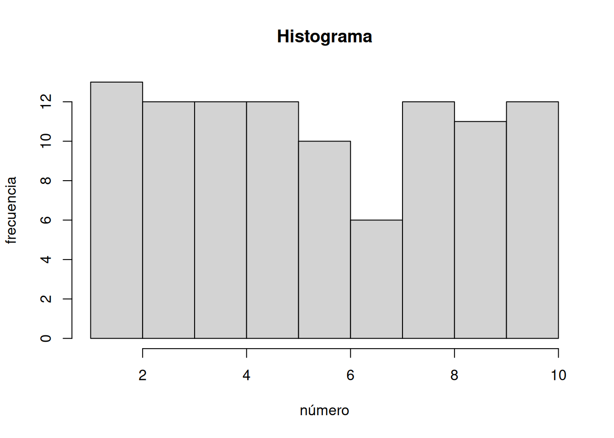
Uy… como podés ver, no todos los números ocurrieron exactamente 10 veces. Las barras no tienen toda la misma altura. Esto muestra que el muestreo aleatorio de números desde esta distribución no garantiza que los números muestrados se vean exactamente como la distribución original. A esto lo llamamos error muestral, o variabilidad del muestreo.
6.2.2 No todas las muestras son iguales — de hecho, suelen ser bastante distintas
Veamos más de cerca el error muestral. Vamos a tomar una muestra de 20 números de la distribución uniforme. Deberíamos esperar que cada número entre 1 y 10 ocurra unas dos veces. Como antes, esta expectativa puede visualizarse con un histograma.
Para tener una mejor idea de la variabilidad muestral, repitamos ese proceso diez veces. La Figura 6.3 muestra 10 histogramas, cada uno representando una muestra distinta de 20 números:
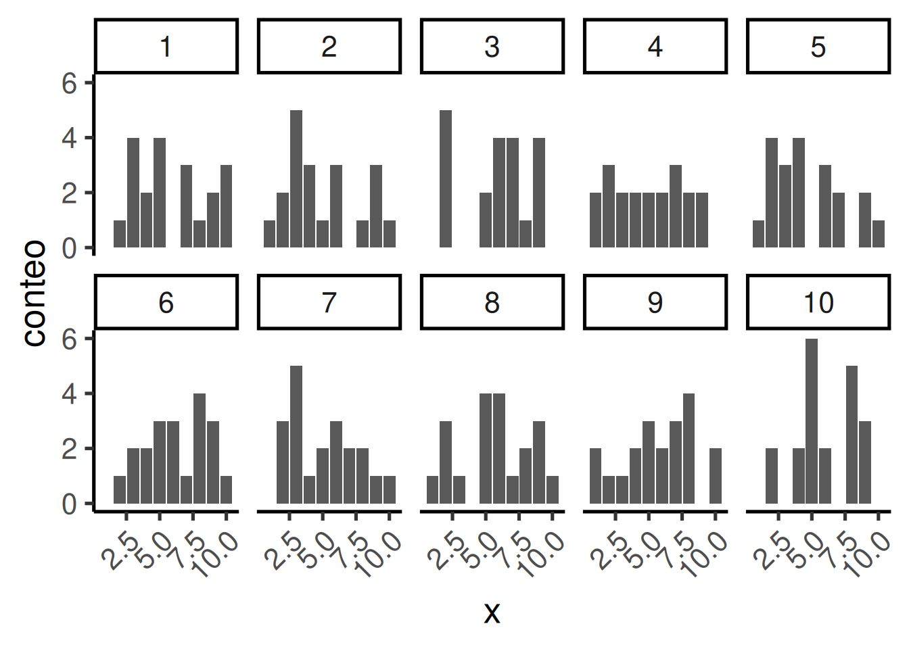
Probablemente notes enseguida que ninguno de los histogramas es igual. Aunque estamos tomando aleatoriamente 20 números de la misma distribución uniforme, cada muestra de 20 números resulta diferente. Esto es variabilidad muestral, o error de muestreo.
La Figura 6.4 muestra una versión animada del proceso de elegir repetidamente 20 números aleatorios nuevos y graficar un histograma. La línea horizontal muestra la forma plana de la distribución uniforme. La línea cruza el eje y en el valor 2; y esperamos que cada número (del 1 al 10) ocurra unas 2 veces en una muestra de 20. Sin embargo, cada muestra varía bastante, debido al azar.
Observar los histogramas anteriores nos muestra que puede ser difícil averiguar de dónde vinieron nuestros números. En el mundo real, nuestras mediciones son muestras. Por lo general, solo tenemos el lujo de obtener una única muestra de mediciones, en lugar de repetirlas 10 veces o más. Si mirás los histogramas, verás que algunos de ellos parecen haber salido de una distribución uniforme: la mayoría de las barras están cerca de 2, y todas más o menos alineadas. Pero si te tocara otra muestra distinta, podrías ver un histograma muy irregular, con algunos números ocurriendo mucho más que otros. Eso podría hacerte pensar que esos números no provienen de una distribución uniforme (parecen demasiado irregulares). Pero recordá: todas estas muestras vinieron de una distribución uniforme. Así es como se ven las muestras tomadas de esa distribución. Esto es lo que el azar le hace a las muestras: introduce ruido en los datos individuales.
6.2.3 Las muestras grandes se parecen más a la distribución de la que provienen
Volvamos a la pregunta: ¿cuál de las dos muestras en Figura 6.5 te parece que vino de una distribución uniforme?
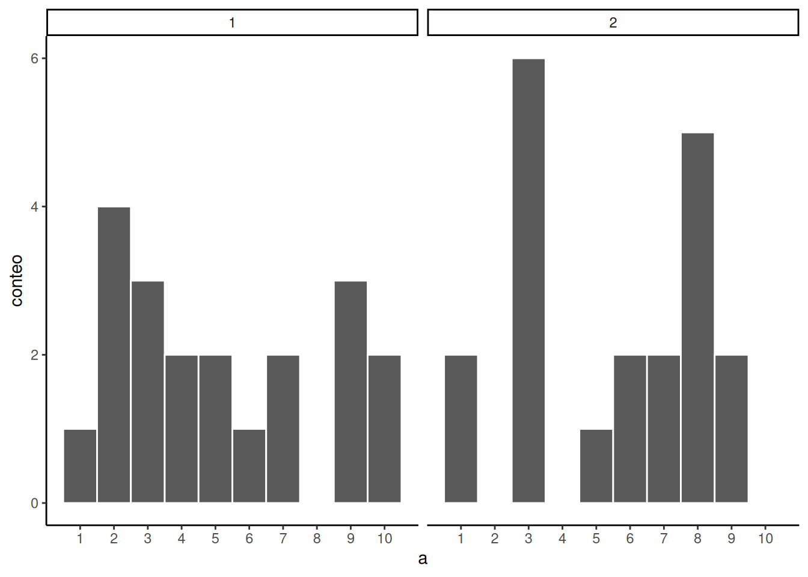
La respuesta es que ambas vinieron de una distribución uniforme. Pero ninguna parece que lo haya hecho.
¿Podemos mejorar las cosas y facilitar ver si una muestra proviene de una distribución uniforme? Sí, podemos. Lo único que necesitamos hacer es aumentar el tamaño de la muestra. A menudo usamos la letra n para referirnos al tamaño muestral. n es el número de observaciones en la muestra.
Así que aumentemos el número de observaciones en cada muestra, de 20 a 100. Vamos a crear 10 muestras (cada una con 100 observaciones), y a graficar un histograma para cada una. Todas estas muestras se extraen de la misma distribución uniforme. Esto significa que deberíamos esperar que cada número del 1 al 10 ocurra unas 10 veces en cada muestra. Los histogramas están en la Figura 6.6.
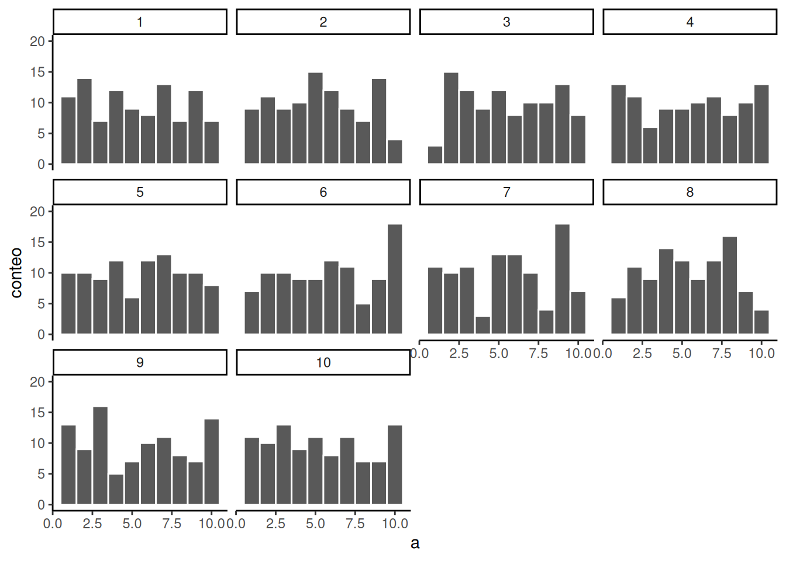
De nuevo, la mayoría de estos histogramas no se ven muy planos, y todas las barras parecen ir hacia arriba o hacia abajo; además, no están exactamente en 10 cada una. Así que todavía estamos lidiando con el error muestral. Es un fastidio. Siempre está presente.
Aumentemos el \(N\) por muestra de 100 a 1000. Deberíamos esperar que cada número aparezca unas 100 veces. ¿Qué sucede?

La Figura 6.7 muestra que los histogramas empiezan a aplanarse. Las barras todavía no están perfectamente en 100, porque sigue habiendo error muestral (siempre lo habrá). Pero si vieras un histograma que se ve plano y supieras que la muestra contiene muchas observaciones, podrías tener más confianza en que esos números provienen de una distribución uniforme.
Solo por diversión, hagamos muestras realmente grandes. Digamos, 100.000 observaciones por muestra. En ese caso, deberíamos esperar que cada número ocurra unas 10.000 veces. ¿Qué pasa?
La Figura 6.8 muestra que los histogramas de cada muestra empiezan a parecerse entre sí. Todas tienen 100.000 observaciones, y eso le da suficiente oportunidad al azar para distribuir los números de manera más equitativa, asegurándose aproximadamente de que todos ocurran más o menos la misma cantidad de veces. Como podés ver, las barras están todas muy cerca de 10.000, que es donde deberían estar si la muestra realmente proviene de una distribución uniforme. De nuevo, no todas las barras tienen exactamente el mismo alto —todavía hay error muestral—, pero el patrón general es ahora mucho más claro. Cada número ocurre más o menos la misma cantidad de veces, y las diferencias entre muestras son mucho menores.
Consejo pro
El patrón que muestra una muestra tiende a estabilizarse a medida que aumenta el tamaño muestral. Las muestras pequeñas pueden mostrar todo tipo de patrones, debido al error muestral (el azar).
Antes de volver al tema de los experimentos con el que comenzamos, hagamos dos preguntas más. Primero: ¿cuál de las dos muestras en Figura 6.9 creés que proviene de una distribución uniforme? Dato: cada una de estas muestras tiene 20 observaciones.
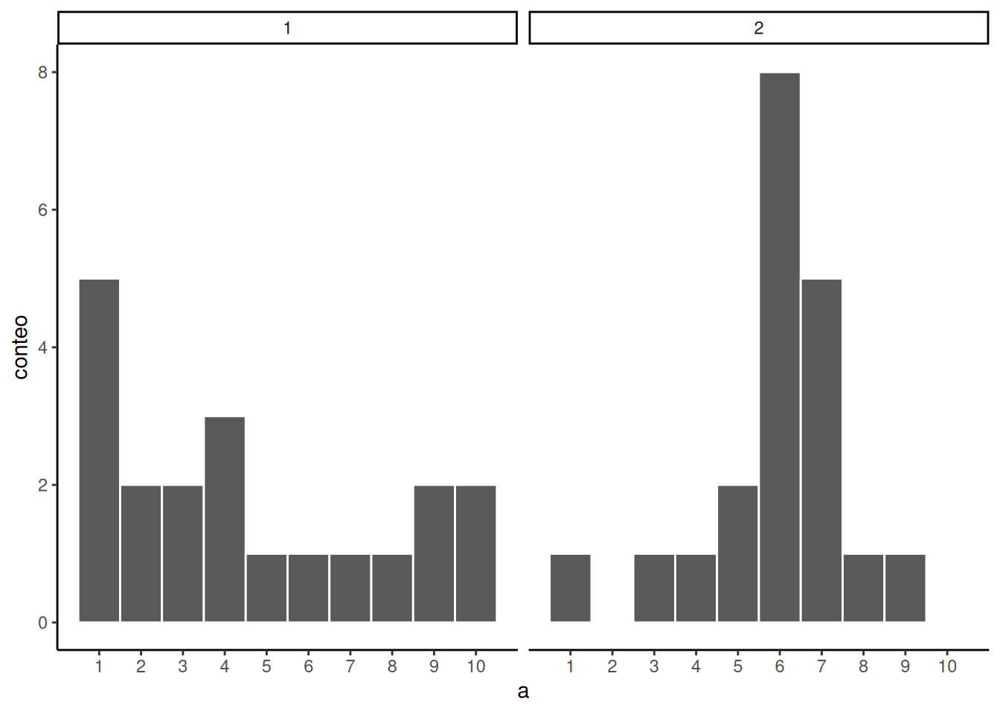
Si no estás muy segurx de la respuesta, es porque el error muestral (el azar) está “difuminando” los histogramas.
Acá va exactamente la misma pregunta, solo que esta vez tomamos 1.000 observaciones por muestra. ¿Cuál histograma en Figura 6.10 creés que proviene de una distribución uniforme, y cuál no?
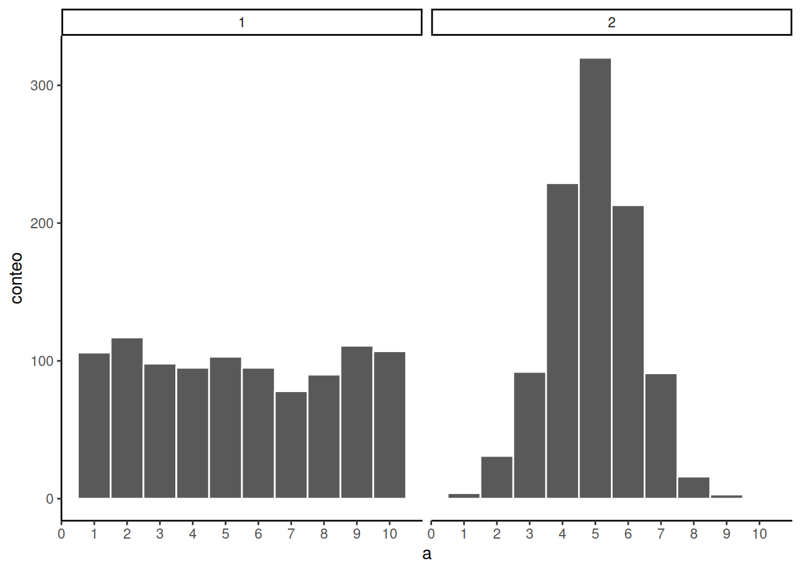
Ahora que aumentamos N, podemos ver que el patrón en cada muestra se vuelve más evidente. El histograma de la muestra 1 tiene barras cercanas a 100; no son perfectamente planas, pero se parece a una distribución uniforme. El histograma de la muestra 2 no es plano en absoluto.
¡Felicitaciones! Acabamos de hacer inferencias estadísticas sin usar fórmulas.
“¿Lo hicimos?” Sí: al mirar nuestras dos muestras, inferimos que la muestra 2 no provino de una distribución uniforme. También inferimos que la muestra 1 podría haber venido de una distribución uniforme. Fantástico. Este tipo de inferencias son las mismas que vamos a hacer durante el resto del curso.
Vamos a mirar algunos números, preguntarnos de dónde salieron, y luego organizarlos de forma tal que podamos hacer inferencias sobre el tipo de distribución de la que provinieron. Eso es todo.
6.3 ¿Hay una diferencia?
Volvamos a los experimentos. En un experimento, queremos saber si una variable independiente (nuestra manipulación) causa un cambio en una variable dependiente (la medición). Si esto ocurre, entonces esperamos ver alguna diferencia en nuestra medición como función de la manipulación.
Considerá el ejemplo del interruptor de luz:
Experimento del interruptor de luz: manipulás el interruptor hacia arriba (condición 1 de la variable independiente), la luz se enciende (medición). Manipulás el interruptor hacia abajo (condición 2 de la variable independiente), la luz se apaga (otra medición). La medición (la luz) cambia (se enciende o se apaga) como función de la manipulación (mover el interruptor hacia arriba o hacia abajo).
Podés ver el cambio en la medición entre condiciones, es tan obvio como el día y la noche. Entonces, cuando realizás una manipulación y ves la diferencia (el cambio) en tu medición, podés estar bastante seguro de que tu manipulación está causando el cambio.
Nota: para ser cautos, podemos decir que “algo” relacionado con tu manipulación está causando el cambio; tal vez no sea exactamente lo que pensás que es, si tu manipulación es muy complicada e involucra muchos elementos en juego.
6.3.1 El azar puede producir diferencias
¿Creés que el azar puede producir la apariencia de diferencias, incluso cuando en realidad no hay ninguna? Espero que sí. Ya mostramos que el proceso de muestreo de números desde una distribución es algo azaroso que genera muestras distintas. Las muestras diferentes son diferentes entre sí, así que sí: el azar puede producir diferencias. Y eso puede complicar la interpretación de los experimentos.
Hagamos un experimento ficticio en el que no esperamos encontrar diferencias, porque vamos a manipular algo que no debería generar ningún efecto. Este es el planteo:
Vos sos el experimentador y estás parado frente a una máquina expendedora de bolitas. Es muy grande, tiene miles de bolitas. El 50% son verdes y el 50% son rojas. Querés averiguar si sacar bolitas con la mano derecha o con la izquierda te hace sacar más bolitas verdes. Además, vas a estar con los ojos vendados todo el tiempo. La variable independiente es mano: derecha vs. izquierda. La variable dependiente es el color de cada bolita que sacás.
Realizás el experimento así:
- te colocás una venda en los ojos.
- sacás 10 bolitas al azar con la mano izquierda y las dejás a un lado.
- sacás 10 bolitas al azar con la mano derecha y las dejás a otro lado.
- contás cuántas bolitas verdes y cuántas rojas sacaste con cada mano.
Esperamos que estés de acuerdo en que tus manos no pueden distinguir entre bolitas verdes y rojas. Si no estás de acuerdo, vamos a estipular además que las bolitas son completamente idénticas en todo, salvo en el color, así que sería imposible diferenciarlas usando el tacto. Entonces, ¿qué debería pasar en este experimento?
—“Eh… quizás saques 5 bolitas rojas y 5 verdes con la mano izquierda, y lo mismo con la derecha?” Más o menos, eso es lo que usualmente pasaría. Pero no es lo único que podría pasar. Acá tenés algunos datos de un experimento ficticio:
| mano | bolita |
|---|---|
| izquierda | 1 |
| izquierda | 0 |
| izquierda | 0 |
| izquierda | 0 |
| izquierda | 0 |
| izquierda | 0 |
| izquierda | 0 |
| izquierda | 0 |
| izquierda | 1 |
| izquierda | 0 |
| derecha | 0 |
| derecha | 0 |
| derecha | 0 |
| derecha | 1 |
| derecha | 1 |
| derecha | 1 |
| derecha | 1 |
| derecha | 1 |
| derecha | 1 |
| derecha | 0 |
—“¿Qué estoy viendo acá?” Esta es una tabla en formato largo. Cada fila es una bolita. La primera columna indica con qué mano se sacó. La segunda indica qué tipo de bolita es. Vamos a decir que los valores 1 representan bolitas verdes y los 0 representan bolitas rojas.
Entonces… ¿la mano izquierda te hizo sacar más bolitas verdes que la mano derecha? Sería más fácil mirar los datos usando un gráfico de barras (Figura 6.11). Para simplificar, vamos a contar solo las bolitas verdes (las otras necesariamente son rojas). Así que solo necesitamos sumar los unos; los ceros no suman nada.
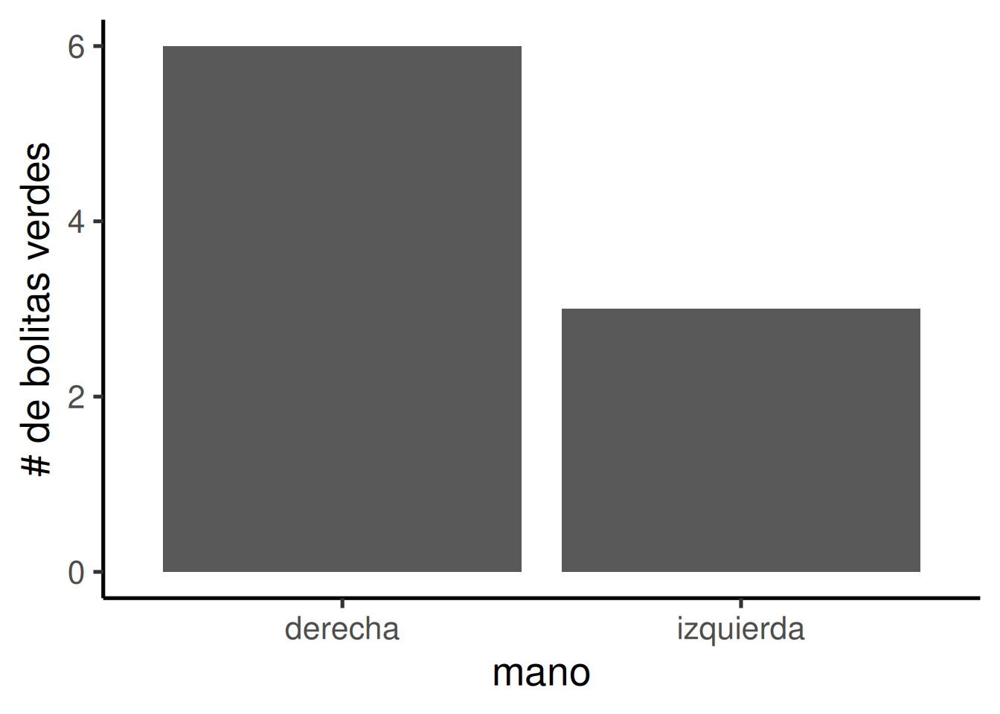
“¡Ah mirá! Las barras no son iguales. Una mano sacó más bolitas verdes que la otra. ¿Eso significa que una de tus manos secretamente sabe cómo encontrar bolitas verdes?” No. Es solo otro caso de error muestral, eso que también llamamos suerte o azar. La diferencia acá fue causada por el azar, no por la manipulación (es decir, por qué mano usaste).
¡Alerta de un problema importante para la inferencia! Hacemos experimentos para buscar diferencias, de modo que podamos inferir si nuestras manipulaciones causan cambios en nuestras mediciones. Sin embargo, este ejemplo demuestra que podemos encontrar diferencias solo por azar. Entonces, ¿cómo sabemos si una diferencia es real o simplemente fue causada por el azar?
6.3.2 Las diferencias causadas por el azar se pueden simular
Recordá cuando mostramos que el azar puede producir correlaciones. También mostramos que el azar tiene limitaciones en su capacidad para producir correlaciones. Por ejemplo, el azar genera con más frecuencia correlaciones débiles que fuertes. ¿Te acordás de la “ventana del azar”? Antes descubrimos que las correlaciones que caen fuera de esa ventana son muy poco probables.
Podemos hacer lo mismo con las diferencias. Vamos a investigar exactamente qué puede hacer el azar en nuestro experimento. Una vez que sepamos de lo que el azar es capaz, vamos a estar en una mejor posición para juzgar si nuestra manipulación causó una diferencia, o si simplemente podría haber sido el azar.
Lo primero que vamos a hacer es simular que realizás el experimento de las bolitas 10 veces seguidas. Eso va a producir 10 conjuntos distintos de resultados. La Figura 6.12 muestra gráficos de barras para cada repetición del experimento. Ahora podemos ver si la mano izquierda sacó más bolitas verdes que la derecha.

Estos 10 experimentos nos permiten observar mejor lo que el azar puede hacer. Y también debería coincidir con tus expectativas: si todo está determinado por el azar (como lo diseñamos acá), entonces a veces tu mano izquierda va a sacar más bolitas verdes, otras veces será la derecha, y otras veces ambas sacarán la misma cantidad. ¿Correcto? Correcto.
6.4 El azar hace que algunas diferencias sean más probables que otras
Bien, ya vimos que el azar puede producir diferencias. Pero todavía no tenemos una buena idea de qué es lo que el azar usualmente puede o no puede hacer. Por ejemplo, si pudiéramos encontrar la “ventana de oportunidad” acá, podríamos descubrir que el azar normalmente no produce diferencias demasiado grandes. Y si supiéramos cuál es ese umbral, entonces, si realizamos un experimento y nuestra diferencia es más grande que lo que el azar puede producir, podríamos tener confianza en que no fue el azar lo que generó nuestra diferencia.
Pensemos en nuestra medición de bolitas verdes en términos de una diferencia. Por ejemplo, en cada experimento contamos las bolitas verdes para la mano izquierda y la derecha. Lo que realmente queremos saber es si hay una diferencia entre ellas. Así que podemos calcular el puntaje de diferencia. Vamos a definir ese puntaje de diferencia como: # de bolitas verdes con la izquierda menos # de bolitas verdes con la derecha. Ahora vamos a simular este experimento mil veces. Cada vez, vamos a contar la cantidad de bolitas verdes para cada mano y calcular la diferencia. Luego, vamos a graficar los puntajes de diferencia para ver qué tipo de valores produce el azar.
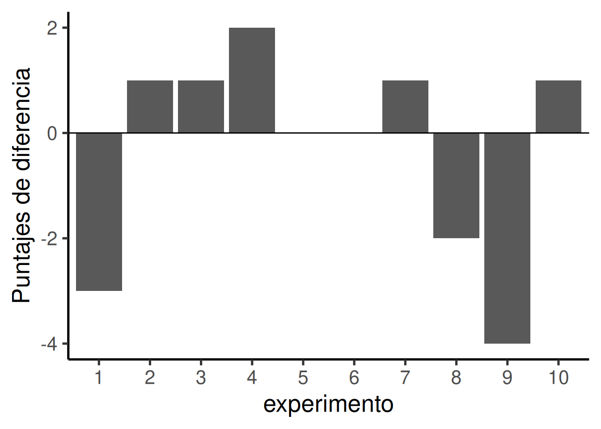
Las barras faltantes significan que se extrajo la misma cantidad de bolitas verdes con ambas manos (puntaje de diferencia igual a 0). Un valor positivo indica que la mano izquierda sacó más bolitas verdes que la derecha. Un valor negativo significa que fue la derecha la que sacó más verdes. Notá que si hubiéramos decidido (y lo podemos hacer) calcular la diferencia al revés (mano derecha menos mano izquierda), los signos de los puntajes se invertirían.
Empezamos a ver mejor qué tipo de diferencias puede generar el azar. Los puntajes de diferencia están mayormente entre -2 y +2. Podríamos hacernos una idea más clara si corremos este experimento ficticio 100 veces en lugar de solo 10. Los resultados se muestran en Figura 6.14.
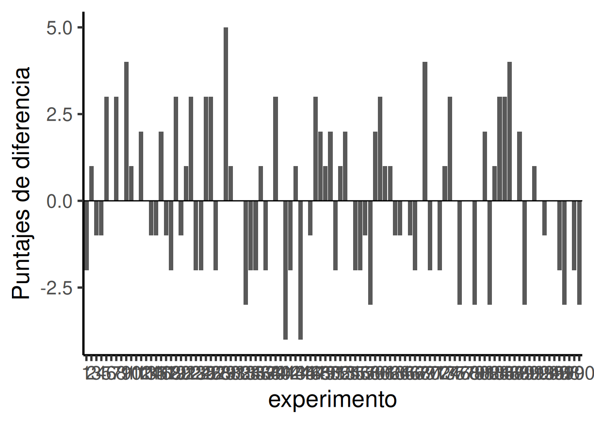
Upss, acabamos de realizar tantos experimentos simulados que el eje x es ilegible, pero va de 1 a 100. Cada barra representa la diferencia de número de bolas verdes elegidas al azar por la mano izquierda o derecha. ¿Empiezas a notar algo? Mira el eje y, éste muestra el tamaño de la diferencia. Sí, hay muchas barras de diferentes tamaños, esto nos muestra que muchos tipos de diferencias ocurren por azar. Sin embargo, el eje y también está restringido. No va de -10 a +10. Las grandes diferencias superiores a 5 o -5 no ocurren muy a menudo.
Ahora que tenemos un método para simular las diferencias debidas al azar, vamos a realizar 10.000 experimentos simulados. Pero, en lugar de trazar las diferencias en un gráfico de barras para cada experimento, ¿qué tal si observamos el histograma de puntuaciones de diferencia? El histograma en la Figura 6.15 proporciona una imagen más clara sobre qué diferencias ocurren con más frecuencia y cuáles no. Esta será otra ventana para observar qué tipo de diferencias es capaz de producir el azar.
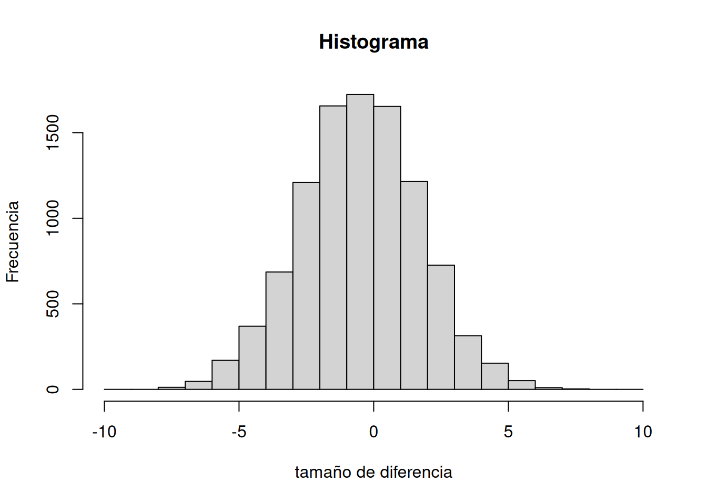
Nuestra simulación por computadora nos permite forzar al azar a actuar miles de veces; cada vez produce una diferencia. Registramos la diferencia, y al final de la simulación graficamos el histograma de esas diferencias. Ese histograma empieza a mostrarnos de dónde vinieron esas diferencias. Recordá la idea de que los números provienen de una distribución, y que la distribución nos dice con qué frecuencia aparece cada número. Estamos viendo una de esas distribuciones. Nos está mostrando que el azar produce algunas diferencias más a menudo que otras.
Primero, el azar usualmente produce diferencias de 0 —esa es la barra más alta en el centro. También puede producir diferencias más grandes, pero a medida que las diferencias se alejan de 0 (positivas o negativas), ocurren con menos frecuencia. La forma de este histograma es tu ventana del azar. Te dice lo que el azar puede hacer, lo que el azar usualmente hace, y lo que usualmente no hace.
Podés usar esta ventana del azar para ayudarte a hacer inferencias. Si vos mismo hicieras el experimento de las bolitas y encontraras que tu mano izquierda eligió 2 bolitas verdes más que la derecha, ¿concluirías que tu mano izquierda es especial, y que te hizo elegir más bolitas verdes? Esperemos que no. Podés mirar la ventana del azar y ver que diferencias de +2 ocurren bastante seguido por puro azar. No deberías sorprenderte si obtuviste una diferencia de +2. Ahora bien, ¿qué pasa si tu mano izquierda eligió 5 bolitas verdes más que la derecha? Bueno, el azar no suele hacer eso. Tal vez empieces a pensar que pasa algo con tu mano izquierda. Y si sacaras 9 bolitas verdes más con la izquierda que con la derecha, realmente podrías empezar a preguntarte. Eso es algo que puede pasar (es posible), pero prácticamente nunca pasa por azar.
Cuando obtenés resultados que casi nunca ocurren por azar, podés tener más confianza en que la diferencia refleja una fuerza causal que no es el azar.
6.5 La prueba de Crump
Vamos a hacer muchas inferencias a lo largo del resto del curso. Y casi todas se reducen a una sola pregunta:
¿Fue el azar el que produjo las diferencias en mis datos?
Vamos a hablar sobre experimentos, principalmente. Y en los experimentos queremos saber si nuestra manipulación causó una diferencia en nuestra medición. Pero, medimos cosas que tienen variabilidad natural. Así que cada vez que medimos algo, siempre vamos a encontrar alguna diferencia. Lo que queremos saber es si la diferencia que encontramos entre nuestras condiciones experimentales podría haber sido producida por azar. Si el azar es una explicación muy poco probable para la diferencia observada, vamos a hacer la inferencia de que el azar no produjo la diferencia, y que algo en nuestra manipulación experimental sí lo hizo. Eso es todo (por ahora).
Nota
La estadística no consiste únicamente en determinar si el azar ha podido producir un patrón en los datos observados. Las mismas herramientas de las que hablamos aquí pueden generalizarse para preguntarse si cualquier tipo de distribución podría haber producido las diferencias. Esto permite hacer comparaciones entre distintos modelos de los datos, para ver cuál era el más probable, en lugar de limitarse a rechazar los improbables (por ejemplo, el azar). Pero, dejaremos esos temas avanzados para otro libro de texto.
Este capítulo trata de construir intuiciones para hacer este tipo de inferencias sobre el papel del azar en tus datos. No me queda claro cuáles son las mejores cosas para decir, para ayudarte a desarrollar intuiciones sobre cómo hacer inferencia estadística. Así que este capítulo prueba diferentes caminos, algunos más estándar, y otros completamente inventados. Lo que vas a leer ahora es una forma inventada de hacer inferencia estadística, sin usar la jerga que normalmente usamos para hablar del tema. El objetivo es trabajar sin fórmulas ni probabilidades, y simplemente usar algunas ideas básicas con simulaciones para ver qué pasa. Vamos a mirar qué puede hacer el azar, y luego hablaremos de qué tiene que pasar en tus datos para que puedas tener confianza en que no fue el azar lo que produjo el patrón que observás.
6.5.1 Métodos intuitivos
Atención: esto es una prueba estadística no oficial, inventada por Matt Crump. Tiene sentido para él (para mí), y si resulta que alguien ya inventó esto antes, entonces Crump no hizo bien la tarea, y le cambiaremos el nombre al autor original más adelante. El punto de esta prueba es mostrar cómo operaciones aritméticas simples que ya conocés pueden usarse para construir una herramienta estadística para la inferencia. Esta prueba utiliza:
- Muestreo aleatorio de números desde una distribución
- Sumar y restar
- Dividir para calcular la media
- Contar
- Graficar y trazar líneas
- NINGUNA FÓRMULA
6.5.2 Parte 1: Intuición basada en frecuencia sobre ocurrencias
Pregunta: ¿Cuántas veces tiene que pasar algo para que consideres que pasa mucho? ¿Y cuántas veces tiene que pasar para que consideres que pasa muy poco, o casi nunca? ¿Tan pocas veces como para que no te preocupe que te pase? ¿Saldrías a la calle todos los días si pensás que te puede caer un rayo 1 de cada 10 veces? Yo no. Probablemente te caería un rayo más de una vez por mes, y morirías bastante rápido. 1 de cada 10 es mucho (para mí, tal vez no para vos —acá no hay una única respuesta correcta).
¿Saldrías todos los días si pensaras que te puede caer un rayo 1 de cada 100 veces? Uf, esa es difícil. ¿Qué haría yo? Si saliera todos los días, probablemente estaría muerto en un año. Tal vez saldría 2 o 3 veces por año —soy algo arriesgado—, pero probablemente viviría más si me quedara en casa para siempre. Sería un bajón.
¿Saldrías todos los días si pensás que te podría caer un rayo 1 de cada 1000 días? Bueno, probablemente te morirías en 3 a 6 años si hicieras eso. ¿Sos timbero? Tal vez saldrías una vez por mes. Igual, un garrón.
¿Saldrías todos los días si pensás que te puede caer un rayo 1 de cada 10.000 días? 10.000 es un número grande, difícil de imaginar. Equivale a que te caiga un rayo más o menos una vez cada 27 años. Sí, probablemente saldría unas 150 veces por año, y cruzaría los dedos.
¿Saldrías todos los días si pensás que te puede caer un rayo 1 de cada 100.000 días? ¿Cuántos años es eso? Son unos 273 años. Con esas probabilidades, probablemente saldría todo el tiempo y me olvidaría del tema. No pasa muy seguido.
El punto de considerar estas preguntas es que desarrolles tu propia intuición sobre qué cosas pasan mucho, qué cosas no pasan mucho, y cómo tomar decisiones importantes en función de qué tan frecuente es algo.
6.5.3 Parte 2: Simulando el azar
Esta parte podría hacerse de muchas maneras. Voy a hacer un montón de suposiciones que no voy a justificar, y no voy a afirmar que la prueba de Crump esté libre de problemas. Lo que sí voy a afirmar es que ayuda a hacer una inferencia sobre si el azar podría haber producido ciertas diferencias en los datos. Ya nos hemos familiarizado con las simulaciones, así que vamos a hacer otra.
Esto es lo que vamos a hacer. Soy un psicólogo cognitivo que está midiendo cierta variable X. Gracias a investigaciones previas, sé que cuando mido X, mis muestras tienden a tener una media y una desviación estándar particulares. Supongamos que la media suele ser 100, y la desviación estándar 15. En este caso, no me interesa usar esos números como estimaciones de parámetros poblacionales, simplemente estoy pensando en cómo suelen ser mis muestras. Lo que quiero saber es cómo se comportan cuando las muestreo. Quiero ver qué tipo de muestras ocurren con frecuencia, y cuáles no. Además, vivo en el mundo real, y en el mundo real, cuando hago experimentos para ver qué modifica X, usualmente tengo acceso a una cantidad limitada de participantes (a quienes agradezco mucho por colaborar). Supongamos que puedo incluir a 20 sujetos por condición. Mantenemos el experimento simple: dos condiciones, así que necesito 40 sujetos en total.
Me gustaría aprender algo que me ayude a inferir. Una posibilidad sería ver cómo se ve la distribución muestral de la media muestral. Esa distribución me diría qué valores de la media aparecen frecuentemente, y cuáles son raros. Pero en realidad voy a saltar esa parte.
Porque lo que realmente me interesa es cómo se ve la distribución muestral de la diferencia entre medias muestrales. Después de todo, voy a ejecutar un experimento con 20 personas en una condición y 20 en otra. Voy a calcular la media del grupo A, la media del grupo B, y mirar la diferencia. Probablemente encuentre una diferencia, pero mi pregunta es: ¿esa diferencia fue causada por mi manipulación, o es del tipo que suele ocurrir por azar? Si supiera qué puede hacer el azar y con qué frecuencia produce diferencias de determinado tamaño, entonces podría comparar la diferencia que observé con lo que el azar puede hacer, y entonces tomar una decisión. Si mi diferencia no ocurre muy seguido, (ya vamos a definir qué es “muy seguido”), entonces tal vez esté dispuesto a creer que mi manipulación causó la diferencia. Si mi diferencia ocurre todo el tiempo solo por azar, entonces no voy a pensar que fue causada por mi manipulación, porque podría haber sido simplemente el azar.
Entonces, esto es lo que vamos a hacer, incluso antes de ejecutar el experimento. Vamos a hacer una simulación. Vamos a muestrear números para el grupo A y para el grupo B, luego vamos a calcular las medias de cada grupo, y después vamos a calcular la diferencia entre esas medias.
Pero vamos a hacer algo muy importante: vamos a fingir que no hicimos ninguna manipulación. Si hacemos esto —no hacemos nada, ninguna intervención que pudiera causar una diferencia—, entonces sabemos que cualquier diferencia entre las medias de los grupos A y B solo puede deberse al error muestral. Eliminamos todas las demás causas: solo queda el azar. Haciendo esto, vamos a poder ver exactamente qué puede hacer el azar. Más importante aún, vamos a ver qué tipo de diferencias ocurren frecuentemente, y cuáles no.
Antes de hacer la simulación, necesitamos responder una pregunta: ¿cuánto es “mucho”? Podríamos elegir cualquier número. Yo voy a elegir 10.000. Eso es mucho. Si algo ocurre solo 1 vez en 10.000, estoy dispuesto a decir que eso no es mucho.
Bien, ya tenemos nuestro número. Vamos a simular las diferencias de medias entre los grupos A y B que podrían surgir solo por azar. Lo vamos a hacer 10.000 veces. Eso le da al azar muchas oportunidades para mostrarnos qué puede hacer y qué no.
Esto es lo que hice: muestreé 20 números para el grupo A y 20 para el grupo B. Ambos grupos provienen de la misma distribución normal, con media = 100 y desviación estándar = 15. Como las muestras provienen de la misma distribución, esperamos que, en promedio, sean similares (aunque ya sabemos que las muestras siempre difieren entre sí). Después calculo la media de cada grupo, y luego la diferencia entre esas medias. Guardo ese puntaje de diferencia de medias, y repito esto hasta tener 10.000 de ellos. Después, dibujo un histograma como el de la Figura 6.16.
Nota
Por supuesto, podríamos reconocer que el azar podría producir una diferencia mayor que 15. Simplemente no le dimos la oportunidad. Solo corrimos la simulación 10.000 veces. Si la corriéramos un millón de veces, tal vez una diferencia mayor que 15 o incluso 20 ocurriría un par de veces. Si la corriéramos un trillón de veces, tal vez una diferencia mayor que 30 ocurriría muy de vez en cuando. Si fuéramos hasta el infinito, entonces el azar podría producir todo tipo de diferencias grandes cada tanto. Pero ya decidimos que 1 en 10.000 no es mucho. Así que cosas que ocurren 0 veces en 10.000 simulaciones —como diferencias mayores a 15— se consideran extremadamente improbables.
Ahora podemos ver lo que el azar puede hacer con respecto al tamaño de nuestras diferencias de medias. El eje x muestra el tamaño de la diferencia de medias. Como tomamos ambas muestras de la misma distribución poblacional, la diferencia entre ellas debería tender a ser 0, y eso es lo que vemos en el histograma.
Pausa un segundo. ¿Por qué las diferencias de medias deberían tender a cero? ¿No era que la media poblacional era 100? ¿No deberían las diferencias rondar 100? No. La media del grupo A tenderá a estar alrededor de 100, y la del grupo B también. Entonces, la diferencia tenderá a ser 100 − 100 = 0.Por eso esperamos una diferencia de medias igual a cero cuando las muestras provienen de la misma población.
Entonces, las diferencias cercanas a cero ocurren con más frecuencia —eso es bueno, es lo que esperábamos. Las diferencias más grandes (positivas o negativas) ocurren cada vez menos. Diferencias mayores que 15 o menores que -15 no ocurrieron nunca. Para nuestros fines, parece que el azar solo produce diferencias entre -15 y 15.
OK, hagamos un par de preguntas simples.¿Cuál fue el número negativo más grande (es decir, el más negativo) que ocurrió en la simulación? Vamos a usar R para esto. Todos los 10.000 puntajes de diferencia están guardados en una variable que llamé diferencia. Si queremos encontrar el valor mínimo, usamos la función min. Este es el resultado:
min(diferencia)
#> [1] -16.25988Bien, ¿y cuál fue el número positivo más grande que ocurrió? Usemos la función max para averiguarlo. Esa función encuentra el valor más grande (máximo) de una variable. Por cierto, acabamos de calcular el rango: el mínimo y el máximo de los datos. Recordá que ya aprendimos eso antes. De todos modos, acá va el máximo:
max(diferencia)
#> [1] 17.3742Ambos valores extremos ocurrieron solo una vez. Fueron tan poco frecuentes que ni siquiera los pudimos ver en el histograma —la barra era tan baja que no se notaba. Además, el mayor valor negativo y el mayor positivo tienen prácticamente el mismo tamaño (ignorando el signo), lo cual tiene sentido porque la distribución parece bastante simétrica.
Entonces, ¿qué podemos decir sobre estos dos números —el mínimo y el máximo? Podemos decir que el mínimo ocurrió 1 vez de cada 10.000. Y que el máximo ocurrió 1 vez de cada 10.000. ¿Eso es mucho? Para mí, no. No es mucho.
¿Y con qué frecuencia ocurre una diferencia de 30 (mucho más grande que el máximo)? No podemos decirlo exactamente, porque 30 no ocurrió nunca en la simulación. Con lo que tenemos, podemos decir: 0 veces de cada 10.000. Eso significa: nunca.
Estamos por pasar a la parte tres, que consiste en trazar líneas de decisión y hablar sobre ellas. La parte realmente importante de la parte 3 es esta: ¿Qué dirías si hicieras este experimento una vez y encontraras una diferencia de medias de 30? Yo diría: eso ocurre 0 veces de cada 10.000 por azar. Yo diría: el azar no produjo mi diferencia de 30. Eso es lo que diría. Vamos a desarrollar esta idea ahora mismo.
6.5.4 Parte 3: Juicio y toma de decisiones
Recordá: ni siquiera hemos hecho un experimento real. Simplemente simulamos lo que podría pasar si lo hiciéramos. Hicimos un histograma. Vimos que el azar produce algunas diferencias más que otras, y que nunca produce diferencias realmente grandes. ¿Qué deberíamos hacer con esa información?
Lo que vamos a hacer es hablar sobre juicio y toma de decisiones. ¿De qué tipo? Bueno, cuando finalmente hagas un experimento real, vas a obtener dos medias —una para el grupo A y otra para el grupo B—, y entonces vas a tener que hacer algunos juicios, y quizás incluso tomar una decisión, si querés.
Vas a tener que juzgar si el azar (es decir, el error muestral) podría haber producido la diferencia que observaste. Si juzgás que no fue el azar, quizás decidas contarle al mundo que tu manipulación experimental realmente funciona. Si juzgás que sí podría haber sido el azar, quizás tomes una decisión distinta. Estas decisiones son importantes para los investigadores. Sus carreras pueden depender de ellas. Y además, sus decisiones importan para el público. A nadie le gusta escuchar noticias falsas en los medios sobre hallazgos científicos.
Así que lo que estamos haciendo es prepararnos para tomar esos juicios. Vamos a trazar un plan, antes incluso de ver los datos, sobre cómo vamos a juzgar y decidir lo que encontremos. Este tipo de planificación también puede usarse para interpretar los resultados de otras personas, como una forma de comprobar dos veces si creés que esos resultados son plausibles. El tema con el juicio y la toma de decisiones es que las personas razonables no se ponen de acuerdo sobre cómo hacerlo, las personas poco razonables realmente no se ponen de acuerdo, y los estadísticos e investigadores también discrepan sobre cómo hacerlo. Voy a proponer algunas ideas con las que la gente va a estar en desacuerdo. Está bien. Estas ideas igual tienen sentido. Y esas ideas que generan desacuerdo apuntan a problemas importantes que son muy reales en cualquier test de inferencia estadística “real”.
Hablemos ahora de algunos hechos objetivos que sabemos con certeza a partir de nuestra simulación de 10.000 repeticiones. Por ejemplo, podemos trazar algunas líneas en el gráfico y marcar algunas regiones distintas. Vamos a hablar de dos tipos de regiones:
- Región del azar. El azar lo hizo. El azar podría haberlo hecho.
- Región del no azar. El azar no lo hizo. El azar no podría haberlo hecho.
Las regiones están definidas por el valor mínimo y el valor máximo observados en la simulación. El azar nunca produjo un número menor ni mayor que esos extremos. La región dentro del rango es lo que el azar sí hizo, y la región fuera del rango, en ambos extremos, es lo que el azar nunca hizo.
Se ve así en la Figura 6.17:
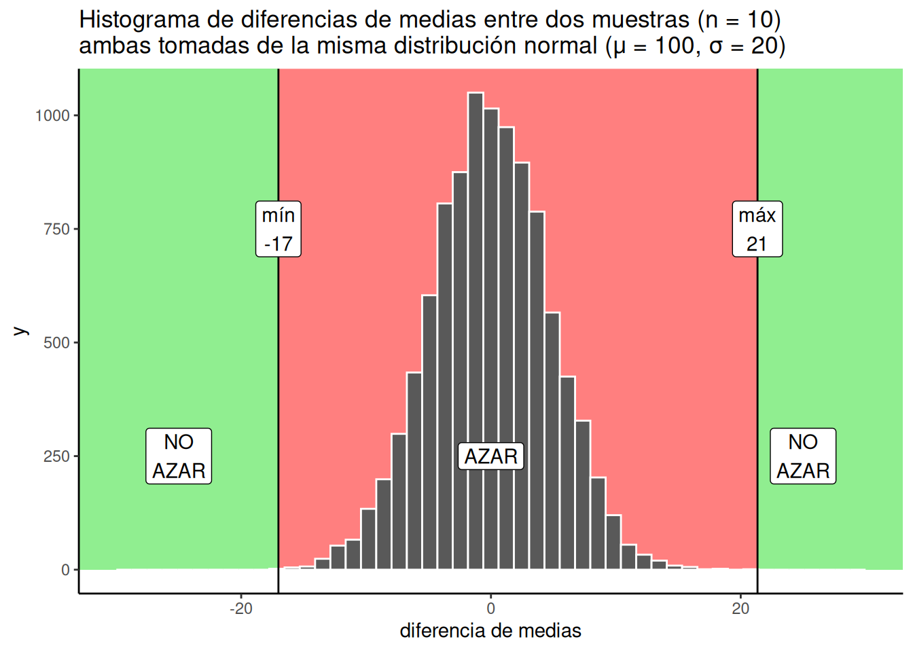
Acabamos de trazar unas líneas, sombrear algunas regiones y construir un plan que podríamos usar para tomar decisiones. ¿Cómo funcionarían esas decisiones? Supongamos que hiciste el experimento y encontraste una diferencia de medias entre los grupos A y B de 25. ¿Dónde está el 25 en la figura? Está en la parte verde. ¿Qué dice la parte verde? “NO AZAR”. ¿Qué significa esto? Significa que el azar nunca produjo una diferencia de 25. Eso ocurrió 0 veces de cada 10.000. Si encontramos una diferencia de 25, quizás podamos concluir con confianza que el azar no causó esa diferencia. Si yo encontrara una diferencia de 25 con este tipo de datos, estaría bastante seguro de que el azar no la causó, y me daría permiso a mí mismo para considerar que mi manipulación experimental podría estar causando la diferencia.
¿Y qué pasa con una diferencia de +10? Eso está en la parte roja, donde vive el azar. El azar podría haber producido una diferencia de +10, porque podemos ver que a veces lo hizo. La parte roja es la ventana de lo que el azar hizo en nuestra simulación. Cualquier cosa dentro de esa ventana podría haber sido una diferencia causada por el azar. Si encontrara una diferencia de +10, diría: “sí, podría haber sido el azar”. Y también estaría menos seguro de que la diferencia fue causada solamente por mi manipulación experimental.
La inferencia estadística podría ser tan simple como esto: El número que obtenés de tu experimento podría estar dentro de la ventana del azar (entonces no podés descartar al azar como causa), o podría estar fuera de la ventana del azar (entonces sí podés descartarlo). Caso cerrado. Vámonos todos a casa.
6.5.5 Zonas grises
Entonces, ¿cuál es el problema? Dependiendo de quién seas, y qué tipo de riesgos estés dispuesto a tomar, puede que no haya ningún problema. Pero si sos aunque sea un poco arriesgado, entonces sí hay un problema que hace difícil emitir juicios claros sobre el papel del azar.
Nos gustaría decir que el azar causó o no causó la diferencia que observamos. Pero en realidad, siempre estamos en la posición de tener que admitir que el azar podría haberla causado a veces, o que no la habría causado la mayoría de las veces.
Estas son afirmaciones ambiguas, imprecisas, entre el “sí” y el “no”. Y está bien. El gris también es un color. Vamos a darle un poco de respeto al gris.
—“¿De qué zonas grises estás hablando? ¡Solo veo rojo y verde! ¿Tengo daltonismo para el gris?”—
Veamos dónde podrían estar algunas zonas grises. Digo “podrían”, porque la gente no se pone de acuerdo sobre dónde empieza el gris. Las personas tienen distintos niveles de tolerancia al gris.
La Figura 6.18 muestra mi opinión sobre dónde se ubican las zonas grises:
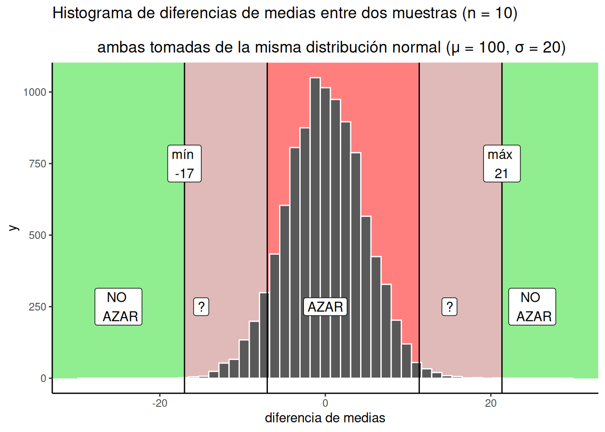
Hice dos zonas grises, y son grisáceo-rojizas, porque todavía estamos dentro de la ventana del azar. Hay signos de interrogación (?) en las zonas grises. ¿Por qué? Los signos de interrogación reflejan cierta incertidumbre que tenemos respecto a esas diferencias en particular. Por ejemplo, si encontrás una diferencia dentro de una zona gris, digamos una de 15. 15 está por debajo del máximo, lo que significa que el azar sí produjo diferencias cercanas a 15. Pero, las diferencias de 15 no ocurren muy seguido.
¿Qué podés concluir o decir sobre ese 15 que encontraste? ¿Podés decir, sin lugar a dudas, que el azar no produjo esa diferencia? Por supuesto que no. Sabés que el azar podría haberla producido. Aun así, es una de esas cosas que no ocurren mucho. Eso hace que el azar sea una explicación poco probable. En lugar de pensar que fue el azar, quizás estés dispuesto a tomar el riesgo y decir que tu manipulación experimental causó la diferencia. Estás haciendo una apuesta de que no fue el azar… pero podría ser una apuesta razonable, ya que sabés que las probabilidades están de tu lado.
Tal vez estés pensando que tus zonas grises no son iguales a las que dibujé yo. Quizás quieras ser más conservador y hacerlas más chicas. O, tal vez seas más arriesgado y prefieras hacerlas más grandes. O incluso, quizás quieras extender la zona gris un poco dentro de la zona verde (después de todo, el azar podría producir diferencias más grandes alguna que otra vez, y para evitarlas tendrías que hacer que la zona gris invada un poco el área verde).
Otra cosa en la que pensar es en tu política de decisión. ¿Qué vas a hacer cuando tu diferencia observada caiga dentro de la zona gris? ¿Siempre vas a tomar la misma decisión sobre el papel del azar? ¿O a veces vas a cambiar de parecer, según cómo te sientas? Tal vez pienses que no debería haber una política estricta, y que deberías aceptar cierto nivel de incertidumbre. La diferencia que encontraste podría ser real… o tal vez no lo sea. Hay incertidumbre, es difícil evitarla.
Así que vamos a ilustrar otro tipo de estrategia para tomar decisiones. Recién hablamos de una que incluía líneas y regiones. Eso hace que parezca una elección binaria: podemos descartar o no descartar el papel del azar. Otra perspectiva es que todo es un matiz de gris, como en la Figura 6.19.
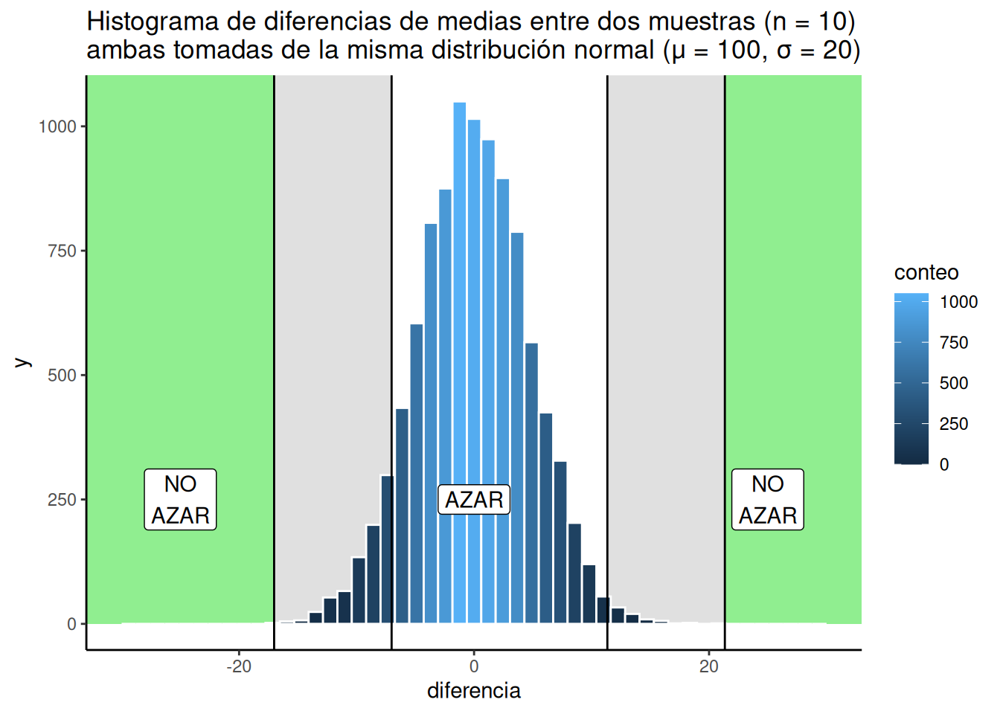
OK, así que lo hice con tonos de azul (porque era más fácil en R). Ahora podemos ver dos planes de decisión al mismo tiempo. Notá que a medida que las barras se vuelven más bajas, también se vuelven de un azul más oscuro e intenso. El color puede usarse como guía para tu confianza. Es decir, tu confianza en la creencia de que tu manipulación causó la diferencia, y no el azar. Si encontrás una diferencia cerca de una barra azul bien oscura, esas diferencias no ocurren muy seguido por azar, así que podrías estar muy confiado en que el azar no la causó. Si encontrás una diferencia cerca de una barra azul un poco más clara, podrías estar un poco menos confiado. Eso es todo. Ejecutás tu experimento, obtenés tus datos, y después tenés cierto nivel de confianza en que la diferencia no fue producida por azar.
Esta forma de pensar se desarrolla de manera mucho más interesante en el mundo bayesiano de la estadística. No vamos a meternos demasiado en eso, pero lo mencionaremos un poco acá y allá. Vale la pena saber que existe.
6.5.5.1 Tomar decisiones y equivocarse
No importa cómo planees tomar decisiones sobre tus datos, siempre vas a estar propenso a cometer errores. Podrías declarar que un resultado es real, cuando en realidad fue causado por azar. Eso se llama un error tipo I, o un falso positivo. Podrías ignorar un resultado, decir que fue azar, cuando en realidad no lo fue (aunque estaba dentro de la ventana). Eso se llama un error tipo II, o un falso negativo.
La forma en que tomás decisiones puede influir en con qué frecuencia cometés errores a lo largo del tiempo. Si sos investigador, vas a correr muchos experimentos, y vas a cometer cierta cantidad de errores con el tiempo.
Si usás algo como el método muy estricto de solo aceptar resultados como reales cuando están en la zona de “no azar”, entonces no cometerás muchos errores tipo I. Prácticamente todos tus resultados serán reales. Pero también vas a cometer errores tipo II, porque vas a perderte cosas reales que tu criterio de decisión dice que son producto del azar. Y también vale lo contrario. Si estás dispuesto a ser más liberal, y aceptar como reales los resultados que están en la zona gris, entonces vas a cometer más errores tipo I, pero no vas a cometer tantos errores tipo II. Bajo la estrategia de decisión que usa estas regiones de corte para decidir, hay un compromiso necesario: no podés minimizar ambos tipos de error a la vez.
La perspectiva bayesiana evita un poco este problema. Los bayesianos hablan de actualizar sus creencias y niveles de confianza con el tiempo. En esa visión, lo único que tenés es un cierto nivel de confianza sobre si algo es real o no, y al ejecutar más experimentos podés aumentar o disminuir ese nivel de confianza. Esto, de alguna forma, evita el compromiso entre errores tipo I y tipo II.
De todos modos, hay otra forma de reducir los errores tipo I y tipo II, y de aumentar tu confianza en los resultados incluso antes de hacer el experimento. Se llama: Saber cómo diseñar un buen experimento.
6.5.6 Parte 4: Diseño experimental
Ya vimos lo que puede hacer el azar. Ahora ejecutamos un experimento. Manipulamos algo entre los grupos A y B, obtenemos los datos, calculamos las medias de grupo, y luego observamos la diferencia. Después cruzamos todos los dedos de las manos y los pies, y rezamos con todas nuestras fuerzas que la diferencia sea lo suficientemente grande como para no haber sido causada por azar. Eso es mucho rezar.
El asunto es el siguiente: a menudo no sabemos qué tan fuerte es nuestra manipulación desde el principio. Entonces, incluso si puede causar un cambio, no necesariamente sabemos cuánto puede cambiar las cosas. Por eso estamos ejecutando el experimento.
Muchas manipulaciones en Psicología no son lo suficientemente fuertes como para causar grandes cambios. Y eso es un problema cuando queremos detectar esas fuerzas causales más pequeñas. En nuestro ejemplo ficticio, podrías manipular algo que tenga una influencia muy leve, que nunca empuje la diferencia de medias más allá de, digamos, 5 o 10. En nuestra simulación, necesitábamos algo más cercano a 15, 17 o 21 —o mejor aún, ¡30!— porque el azar nunca hace eso. Digamos que tu manipulación es escuchar música vs. no escuchar música. Escuchar música podría cambiar algo sobre X, pero si solo cambia X en +5, nunca vas a poder afirmar con confianza que no fue el azar. Y no es tan fácil cambiar completamente la condición de música para que sea súper intensa y realmente cause un cambio en X comparado con la condición sin música.
¡DISEÑO EXPERIMENTAL AL RESCATE! Último momento: a menudo es posible cambiar cómo ejecutás tu experimento para que sea más sensible a efectos pequeños.
¿Tenés alguna idea de cómo se puede hacer esto? Acá va una pista: es todo eso que aprendiste sobre la distribución muestral de la media muestral, y el papel del tamaño muestral. ¿Qué le pasa a la distribución muestral de la media cuando N (el tamaño de muestra) aumenta? La distribución se vuelve más y más angosta, y empieza a parecerse a un único número (la media hipotética de la población hipotética). Eso es genial.
Si cambiás el enfoque y pensás en las diferencias de medias, como la distribución que creamos en esta prueba, ¿qué creés que va a pasar con esa distribución a medida que aumentamos N? También se va a achicar. A medida que aumentamos N hacia el infinito, esa distribución se reduce a 0. Lo que significa que, cuando N es infinito, el azar nunca produce diferencias. Podemos usar esto a nuestro favor.
Por ejemplo, podríamos correr nuestro experimento con 20 sujetos por grupo. O podríamos decidir invertir más tiempo y correrlo con 40 sujetos por grupo, o 80, o 150. Cuando vos sos quien ejecuta el experimento, vos decidís el diseño. Y esas decisiones importan muchísimo. Básicamente, cuantos más sujetos tenés, más sensible es tu experimento. Con un N más grande, vas a poder detectar de manera confiable diferencias de medias más pequeñas, y podés concluir con confianza que esas diferencias no fueron producidas por azar.
Fijate en los histogramas de Figura 6.20 . Es la misma simulación de antes, pero con cuatro tamaños muestrales distintos: 20, 40, 80, 160. Vamos duplicando el tamaño muestral en cada simulación, solo para ver qué pasa con el ancho de la ventana del azar.
Ahí lo tenés. La distribución muestral de las diferencias de medias se contrae hacia 0 a medida que aumenta el tamaño muestral. Esto significa que, si ejecutás un experimento con un tamaño muestral mayor, vas a poder detectar diferencias de medias más pequeñas, y estar seguro de que no se deben al azar.
La Tabla 6.2 muestra los valores mínimos y máximos que el azar produjo para cada uno de los cuatro tamaños muestrales:
| Tamaño de muestra | menor | mayor |
|---|---|---|
| 20 | -21.46 | 23.53 |
| 40 | -15.71 | 15.59 |
| 80 | -13.51 | 10.82 |
| 160 | -8.03 | 7.48 |
La tabla muestra que el rango de comportamiento del azar es mucho más amplio para tamaños muestrales pequeños, y más estrecho para tamaños muestrales grandes. Pensá en lo que implica ese estrechamiento para el diseño de tu experimento. Por ejemplo, un aspecto del diseño es la elección del tamaño muestral, N —o, en un experimento de psicología, la cantidad de participantes. Si resulta que tu manipulación va a causar una diferencia de +11, ¿qué deberías hacer? ¿Ejecutar un experimento con N = 20 personas? Espero que no. Si lo hicieras, podrías obtener una diferencia de medias de +11 bastante seguido solo por azar.
Sin embargo, si ejecutarás el experimento con 160 personas, entonces sí podrías decir con seguridad que +11 no fue causado por azar, estaría fuera del rango de lo que el azar puede producir. Incluso podrías considerar correr el experimento con 80 participantes. Una diferencia de +11 ahí no ocurriría muy seguido por azar, y además serías más eficiente en términos de tiempo y recursos.
El punto es: el diseño del experimento determina el tamaño de los efectos que puede detectar. Si querés detectar un efecto pequeño, aumentá el tamaño muestral.
Es importante aclarar que esto no es lo único que podés hacer. También podés aumentar el tamaño de cada celda. Por ejemplo, muchas veces tomamos varias mediciones de un solo sujeto. Cuantas más mediciones tomás (es decir, mayor tamaño de celda), más estable es tu estimación de la media del sujeto. Vamos a hablar más de estas cuestiones más adelante. También podés intentar aplicar una manipulación más fuerte, cuando sea posible.
6.5.7 Parte 5: Yo tengo el poder
Por el poder de Grayskull… ¡YO TENGO EL PODER! – He-Man
El último tema de esta sección se llama poder. Más adelante vamos a definirlo con ideas estadísticas más específicas. Acá solo vamos a hablar de la idea general. Y vamos a mostrar cómo asegurarte de que tu diseño tenga un poder del 100%. Porque, ¿por qué ejecutar un diseño que no tenga poder?
La gran idea detrás del poder es el concepto de sensibilidad. El concepto de sensibilidad parte de la suposición de que hay algo a lo que ser sensible.
Es decir, existe una diferencia real que puede ser medida. Entonces, la pregunta es: ¿cuán sensible es tu experimento? Ya vimos que el número de sujetos (tamaño muestral) cambia la sensibilidad del diseño. Más sujetos = más sensibilidad para detectar efectos más pequeños.
Veamos un gráfico más. Lo que vamos a hacer es simular una medida de sensibilidad para un conjunto de tamaños muestrales, desde 10 hasta 300. Lo haremos en incrementos de 10. Para cada simulación, vamos a calcular las diferencias de medias como lo hicimos antes. Pero, en lugar de mostrar el histograma, simplemente vamos a calcular el valor mínimo y el máximo. Esto es una buena medida del alcance extremo del azar. Luego vamos a graficar esos valores en función del tamaño muestral y ver qué obtenemos.
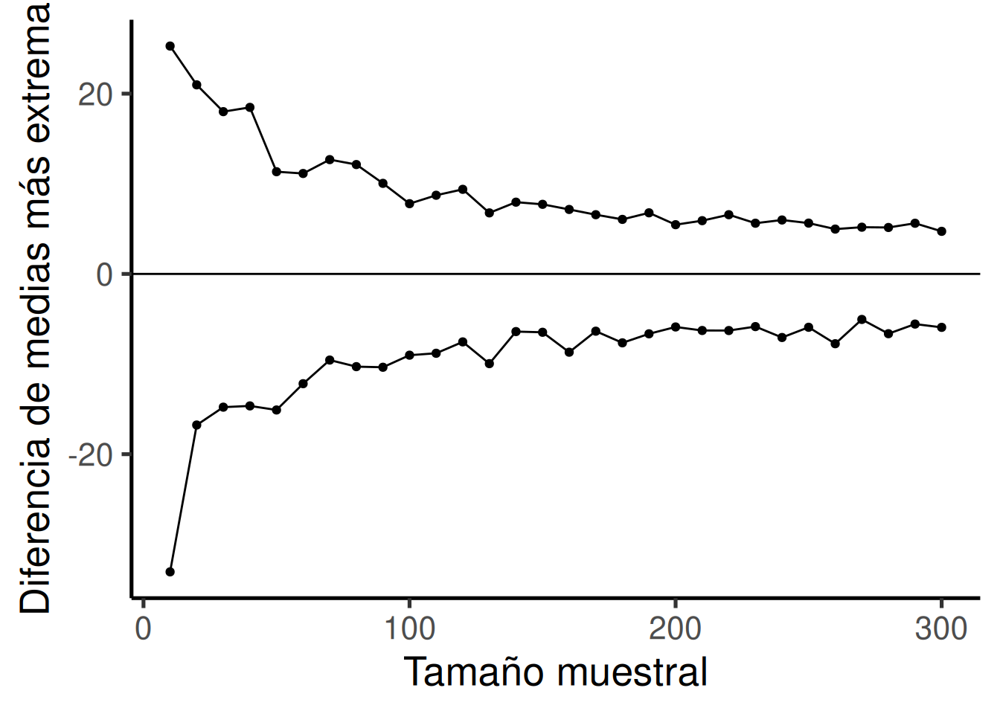
La Figura 6.21 muestra una ventana de sensibilidad razonablemente precisa en función del tamaño muestral. Para cada tamaño muestral, podemos ver la diferencia máxima que el azar produjo y la mínima. En esas simulaciones, el azar nunca produjo diferencias mayores ni menores que esos valores extremos. Así que cada diseño es sensible a cualquier diferencia que esté por debajo de la línea inferior o por encima de la línea superior.
Otra forma de decirlo es la siguiente: ¿Cuáles de los tamaños muestrales son sensibles a una diferencia de +10 o -10? Es decir, si se observa una diferencia de +10 o -10, entonces podríamos decir con mucha confianza que esa diferencia no fue causada por azar, porque según estas simulaciones, el azar nunca produjo diferencias tan grandes. Para ayudarnos a ver cuáles son sensibles, la Figura 6.22 traza líneas horizontales en -10 y +10:
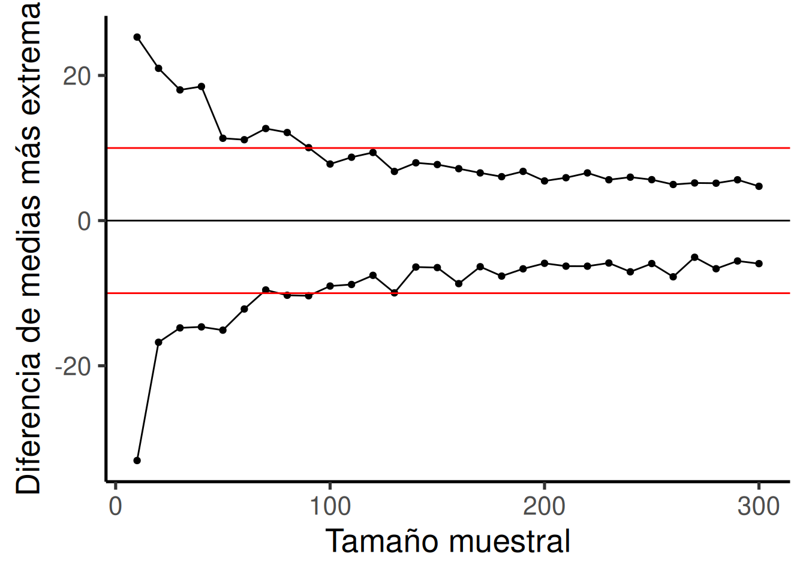
Según una estimación visual aproximada, los diseños con tamaño muestral mayor o igual a 100 son todos sensibles a diferencias reales de 10. Los diseños con tamaño muestral mayor a 100 nunca produjeron diferencias extremas fuera de las líneas rojas solo por azar. Si se usaran esos diseños, y se observara un efecto de 10 o más, entonces podríamos tener confianza en que el azar no produjo ese efecto. Diseñar tu experimento de modo que sepas que es sensible a lo que estás buscando detectar es la gran idea detrás del poder estadístico.
6.5.8 Resumen de la prueba de Crump
¿Qué aprendimos con esta supuesta “prueba de Crump falsa” que nadie usa? Bueno, aprendimos lo básico de lo que estaremos haciendo de ahora en más. Y lo hicimos sin matemática difícil ni fórmulas.
Muestreamos números, calculamos medias, restamos las medias entre condiciones experimentales, luego repetimos ese proceso muchas veces, contamos las diferencias de medias y las pusimos en un histograma. Eso nos mostró lo que puede hacer el azar en un experimento. Después, discutimos cómo tomar decisiones en torno a esos hechos. Y mostramos cómo podemos controlar el papel del azar simplemente cambiando cosas como el tamaño muestral.
6.6 La prueba de aleatorización (o prueba de permutación)
Bienvenidos a la primera estadística inferencial oficial de este libro. Hasta ahora estuvimos construyendo algunas intuiciones. A continuación, vamos a ser un poco más formales y mostrar cómo podemos usar el azar para decirnos si nuestro resultado experimental probablemente fue causado por el azar o no. Hacemos esto con algo llamado una prueba de aleatorización. Las ideas detrás de la prueba de aleatorización son las mismas ideas que están detrás del resto de las estadísticas inferenciales que vamos a discutir en los capítulos siguientes. Y —sorpresa— ya hemos hablado de todas las ideas principales. Ahora, simplemente las vamos a reunir, y darles el nombre de prueba de aleatorización.
Acá va la idea principal. Cuando ejecutás un experimento y recolectás algunos datos, podés descubrir qué pasó esa única vez. Pero, como ejecutaste el experimento solo una vez, no podés saber qué podría haber pasado. La prueba de aleatorización es una forma de averiguar qué podría haber pasado. Y, una vez que sabés eso, podés comparar lo que pasó en tu experimento con lo que podría haber pasado.
6.6.1 Ejemplo ficticio: ¿masticar chicle mejora tus calificaciones?
Supongamos que ejecutás un experimento para saber si masticar chicle hace que los estudiantes obtengan mejores notas en un examen de estadística. Asignás al azar a 20 estudiantes a la condición “con chicle”, y a otros 20 estudiantes a la condición “sin chicle”. Después, les tomás un examen de estadística a todos y medís sus notas. Si masticar chicle causa mejores calificaciones, entonces el grupo con chicle debería tener, en promedio, notas más altas que el grupo sin chicle.
Digamos que los datos lucen así:
| estudiante | chicle | no_chicle |
|---|---|---|
| 1 | 95 | 87 |
| 2 | 87 | 61 |
| 3 | 98 | 74 |
| 4 | 79 | 82 |
| 5 | 85 | 66 |
| 6 | 98 | 67 |
| 7 | 97 | 83 |
| 8 | 90 | 66 |
| 9 | 76 | 44 |
| 10 | 96 | 45 |
| 11 | 74 | 60 |
| 12 | 84 | 71 |
| 13 | 85 | 86 |
| 14 | 73 | 86 |
| 15 | 95 | 59 |
| 16 | 74 | 78 |
| 17 | 95 | 87 |
| 18 | 91 | 61 |
| 19 | 74 | 84 |
| 20 | 78 | 57 |
| Sumas | 1724 | 1404 |
| Medias | 86.2 | 70.2 |
Entonces, ¿los estudiantes que masticaron chicle tuvieron mejor desempeño que los que no lo hicieron? Mirá la fila de medias al final de la tabla. La media para los estudiantes que masticaron chicle fue 86.2, y la media para los estudiantes sin chicle fue 70.2. A simple vista, parece que masticar chicle funcionó.
“¡PAREN LAS ROTATIVAS, esto es ridículo!”. Ya sabemos que es ridículo porque estamos usando datos inventados. Pero, incluso si estos fueran datos reales, podrías pensar: “Eso del chicle no tiene sentido, esta diferencia podría haber sido causada por azar. Quizás los estudiantes más inteligentes cayeron por azar en el grupo con chicle, y por eso sus notas fueron más altas… el chicle en realidad no hizo nada…”. Estamos de acuerdo. Pero echemos un vistazo más de cerca. Ya sabemos cómo salieron los datos. Lo que queremos saber es cómo podrían haber salido. ¿Cuáles son todas las posibilidades?
Por ejemplo, los datos habrían salido un poco distintos si hubiéramos asignado a algunos estudiantes del grupo con chicle al grupo sin chicle, y viceversa. Pensá en todas las formas posibles de asignar a los 40 estudiantes en dos grupos; hay muchísimas maneras. Y las medias de cada grupo serían diferentes dependiendo de cómo se asignen los estudiantes.
En la práctica, no es posible ejecutar el experimento de todas esas formas posibles —eso llevaría demasiado tiempo. Pero sí podemos estimar cómo habrían salido todos esos experimentos usando simulación. Esta es la idea: Tomamos las 40 mediciones (las notas del examen) que obtuvimos para todos los estudiantes. Luego, seleccionamos aleatoriamente a 20 de ellas y fingimos que fueron del grupo con chicle, y las 20 restantes las asignamos al grupo sin chicle. Entonces, volvemos a calcular las medias para ver qué habría pasado. Y seguimos haciendo esto una y otra vez, cada vez calculando lo que habría pasado en esa versión alternativa del experimento.
6.6.1.1 Haciendo la aleatorización
Antes de hacer eso, vamos a mostrar cómo funciona la parte de la aleatorización. Usaremos menos números para que el proceso sea más fácil de visualizar. Acá están los primeros 5 puntajes de examen para los estudiantes en ambos grupos:
| estudiante | chicle | no_chicle |
|---|---|---|
| 1 | 95 | 87 |
| 2 | 87 | 61 |
| 3 | 98 | 74 |
| 4 | 79 | 82 |
| 5 | 85 | 66 |
| Sums | 444 | 370 |
| Means | 88.8 | 74 |
Las cosas podrían haber salido diferente si algunos de los sujetos en el grupo con chicle hubieran sido intercambiados con sujetos del grupo sin chicle. Así es cómo podemos hacer un poco de aleatorización.
#> [1] 79 74 66 82 61
#> [1] 87 87 85 95 98Tomamos los primeros 5 números de los datos originales, y los pusimos todos en una variable llamada all_scores. Luego usamos la función sample en R para mezclar los puntajes. Finalmente, tomamos los primeros 5 puntajes mezclados y los guardamos en una nueva variable llamada new_chicle. Después, colocamos los últimos 5 puntajes en la variable new_no_chicle. Luego los imprimimos, así podemos verlos.
Si hacemos esto un par de veces y lo ponemos en una tabla, podemos ver que las medias para “con chicle” y “sin chicle” serían distintas si los sujetos se asignaran al azar de otra forma. Fijate:
| estudiante | chicle | no_chicle | chicle2 | no_chicle2 | chicle3 | no_chicle3 |
|---|---|---|---|---|---|---|
| 1 | 95 | 87 | 87 | 61 | 82 | 85 |
| 2 | 87 | 61 | 74 | 66 | 61 | 95 |
| 3 | 98 | 74 | 82 | 98 | 87 | 79 |
| 4 | 79 | 82 | 85 | 79 | 66 | 87 |
| 5 | 85 | 66 | 87 | 95 | 98 | 74 |
| Sumas | 444 | 370 | 415 | 399 | 394 | 420 |
| Medias | 88.8 | 74 | 83 | 79.8 | 78.8 | 84 |
6.6.1.2 Simulando las diferencias de medias en distintas aleatorizaciones
En nuestro experimento ficticio encontramos que la media para los estudiantes que masticaron chicle fue 86.2, y la media para los que no lo hicieron fue 70.2. La diferencia de medias (chicle – sin chicle) fue 16. Esa es una diferencia bastante grande. Eso es lo que pasó. Pero, ¿qué podría haber pasado? Si probáramos todos los experimentos posibles en los que los sujetos se asignan de forma diferente, ¿cómo luciría la distribución de las posibles diferencias de medias?
Vamos a averiguarlo. De eso se trata exactamente la prueba de aleatorización. Cuando hacemos nuestra prueba de aleatorización, vamos a medir la diferencia de medias en los puntajes del examen entre el grupo con chicle y el grupo sin chicle. Cada vez que hagamos una aleatorización, guardaremos la diferencia de medias.
Veamos una pequeña animación de lo que ocurre durante la prueba de aleatorización. La Figura 6.23 muestra datos de otro experimento ficticio, pero los principios son los mismos. Después volveremos al experimento del chicle.
La animación muestra tres cosas importantes: Primero, los puntos púrpuras muestran las medias de los puntajes en dos grupos (no estudió vs. estudió). Parece que hay una diferencia, ya que un punto está más bajo que el otro. Queremos saber si el azar podría producir una diferencia tan grande.
Al comienzo de la animación, los puntos verde claro y rojo muestran los puntajes individuales de cada uno de los 10 sujetos en el diseño (los puntos púrpura son las medias de estos puntajes originales). Luego, durante las aleatorizaciones, mezclamos aleatoriamente los puntajes originales entre los grupos. Podés ver esto ocurriendo a lo largo de la animación, mientras los puntos verde y rojo aparecen en diferentes combinaciones aleatorias. Los puntos amarillos en movimiento te muestran las nuevas medias para cada grupo después de la aleatorización. Las diferencias entre los puntos amarillos te muestran el rango de diferencias que el azar podría producir.
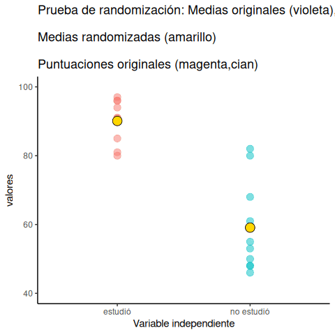
Estamos haciendo una inferencia estadística visual. Al observar el rango de movimiento de los puntos amarillos, estamos viendo qué tipo de diferencias puede producir el azar. En esta animación, los puntos púrpura —que representan la diferencia original— están generalmente fuera del rango del azar. Los puntos amarillos no se mueven más allá de los puntos púrpura, así que el azar parece ser una explicación poco probable de la diferencia.
Si los puntos púrpura estuvieran dentro del rango de los puntos amarillos, entonces sabríamos que el azar es capaz de producir la diferencia que observamos, y que lo hace con bastante frecuencia. En ese caso, no deberíamos concluir que la manipulación causó la diferencia, porque podría haber ocurrido fácilmente por azar.
Volvamos al ejemplo del chicle. Después de aleatorizar nuestras notas muchas veces, y de calcular las nuevas medias y las diferencias de medias, vamos a tener un montón de diferencias para observar, que podemos representar en un histograma. Ese histograma da una imagen de lo que podría haber pasado. Luego, podemos comparar lo que pasó realmente con lo que podría haber pasado.
Este es el histograma de las diferencias de medias obtenidas con la prueba de aleatorización. Para esta simulación, aleatorizamos los resultados del experimento original 1000 veces. Esto es lo que podría haber pasado. La línea azul en la Figura 6.24 muestra dónde se ubica la diferencia observada sobre el eje x.
¿Qué pensás? ¿Podría la diferencia representada por la línea azul haber sido causada por azar? Mi respuesta es: probablemente no. El histograma nos muestra la ventana del azar. La línea azul no está dentro de esa ventana. Esto significa que podemos estar bastante seguros de que la diferencia que observamos no se debe al azar.
Estamos mirando otra ventana del azar. Estamos viendo un histograma de los tipos de diferencias de medias que podrían haber ocurrido en nuestro experimento, si hubiéramos asignado a los sujetos al grupo con chicle y al grupo sin chicle de otra forma.
Como podés ver, las diferencias de medias varían de negativas a positivas. La diferencia más frecuente es 0. Además, la distribución parece simétrica en torno al cero, lo que muestra que teníamos aproximadamente las mismas probabilidades de obtener una diferencia positiva o negativa. También notá que a medida que las diferencias se hacen más grandes (ya sea en dirección positiva o negativa), se vuelven menos frecuentes. La línea azul nos muestra la diferencia observada, la que encontramos en nuestro experimento inventado. ¿Dónde está? Muy a la derecha. Está bien fuera del histograma. En otras palabras, cuando miramos lo que podría haber pasado, vemos que lo que pasó realmente no ocurre muy seguido.
IMPORTANTE: En este caso, cuando hablamos de lo que podría haber pasado, nos referimos a lo que podría haber pasado por azar. Cuando comparamos lo que pasó con lo que el azar podría haber producido, podemos tener una mejor idea de si nuestro resultado fue o no causado por azar.
OK, ahora vamos a fingir que obtuvimos una diferencia de medias mucho más pequeña cuando ejecutamos el experimento. Podemos trazar nuevas líneas (azul y roja) para representar una media más pequeña que podríamos haber encontrado.

Fijate en la línea azul de la Figura 6.25. Si encontraras una diferencia de medias de 10, ¿te convencería de que esa diferencia no fue causada por azar? Como podés ver, la línea azul está dentro de la ventana del azar. Aunque las diferencias de +10 no ocurren muy seguido, podrías inferir que probablemente no fueron causadas por azar (pero tal vez te mantendrías algo escéptico, porque sí podrían haberlo sido).
¿Y qué pasa con la línea roja? La línea roja representa una diferencia de +5. Si encontraras una diferencia de +5 acá, ¿estarías seguro de que no fue causada por azar? Yo no lo estaría. La línea roja está completamente dentro de la ventana del azar —este tipo de diferencia ocurre con bastante frecuencia. Necesitaría más evidencia para considerar la afirmación de que alguna variable independiente realmente causó la diferencia. Me sentiría mucho más cómodo asumiendo que la diferencia fue probablemente causada por error muestral.
6.6.2 Lo que nos queda hasta ahora
¿Notaste que hasta ahora no usamos ninguna fórmula, pero aun así pudimos hacer estadística inferencial? Veremos algunas fórmulas más adelante, pero las ideas detrás de esas fórmulas son más importantes que las fórmulas mismas.
La estadística inferencial es un intento de resolver el problema: ¿De dónde provienen mis datos? En el ejemplo de la prueba de aleatorización, nuestra pregunta fue: ¿De dónde provienen las diferencias entre las medias de mis datos?
Sabemos que esas diferencias podrían haber sido producidas solo por azar. Simulamos lo que puede hacer el azar usando aleatorización. Luego trazamos lo que puede hacer el azar usando un histograma. Y después usamos esa imagen para ayudarnos a hacer una inferencia: ¿La diferencia observada proviene de la distribución del azar, o no?
Cuando la diferencia observada está claramente dentro de la distribución del azar, entonces podemos inferir que nuestra diferencia podría haber sido producida por azar. Cuando la diferencia observada no está claramente dentro de la distribución del azar, entonces podemos inferir que nuestra diferencia probablemente no fue producida por azar.
En mi opinión, estas imágenes son muy, muy útiles. Si uno de nuestros objetivos es ayudarnos a resumir un montón de números complicados para llegar a una inferencia, entonces las imágenes hacen un excelente trabajo. Ni siquiera necesitamos un número resumen: solo necesitamos mirar la imagen y ver si la diferencia observada está dentro o fuera de la ventana del azar. De eso se trata todo esto. Crear formas intuitivas y significativas de hacer inferencias a partir de nuestros datos. A medida que avancemos, lo principal que haremos será formalizar nuestro proceso y hablar más sobre las estadísticas inferenciales “estándar”.
Por ejemplo, en lugar de mirar una imagen (aunque eso es algo útil), vamos a construir algunos números útiles. Por ejemplo: ¿y si quisieras saber cuál es la probabilidad de que tu diferencia haya sido producida por azar? Esa podría ser un número único, como el 95%. Si hubiera una probabilidad del 95% de que el azar pueda producir la diferencia que observaste, tal vez no estés muy confiado de que tu manipulación experimental fue la causa. Si hubiera solo un 1% de probabilidad de que el azar pueda producir esa diferencia, entonces podrías tener más confianza en que el azar no produjo la diferencia; y podrías, en cambio, estar cómodo con la posibilidad de que tu manipulación experimental fue realmente la causa.
Entonces, ¿cómo podemos llegar a esos números? Para llegar a eso, vamos a presentarte algunas herramientas más fundamentales para la inferencia estadística.
6.7 Videos
6.7.1 Hipótesis nula y alternativa
6.7.2 Tipos de Errores
:::::